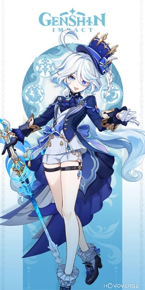

Fontaine · Character Records
Furina
Furina is the human counterpart Focalors named during her plan to avert Fontaine’s prophecy. After five centuries performing as the Hydro Archon, Furina’s public role ends with the Fontaine crisis.

A public role in Fontaine
For five hundred years, Furina presented herself to Fontaine as its Hydro Archon. The city treated her as a celebrity and expected her to play that part in public. The trials themselves were handled through the court and Iudex; Furina’s role was the public face of the Archon, not the judge presiding over cases.
Her confidence and theatrical manner were part of the performance. The Archon Quest later shows the strain this imposed, but it does not make every private action or feeling during those centuries part of one continuous act.
Focalors and her human counterpart
After becoming Hydro Archon, Focalors separated her divinity from her body and spirit. She named the human counterpart she left behind Furina. Focalors then gave Furina a role: continue presenting herself as the Archon for five hundred years while Focalors worked through the Oratrice.
Furina knew she had to maintain the performance, but Focalors withheld its full purpose. The two are connected parts of the plan, yet the story treats Furina as a person with her own fears and choices, not as a second divine Archon.
The trial ends her performance
During Masquerade of the Guilty, Furina is put on trial in the Opera Epiclese. The Oratrice returns a guilty verdict and sentences her to death. Focalors’s revelation explains why Furina had been left on stage and how the Oratrice’s accumulated Indemnitium fits into the plan.
Focalors destroys the divine throne and returns Hydro’s authority to Neuvillette. With the Archon Quest’s crisis resolved, Furina no longer has to continue the public performance. Her endurance is real even though the identity she acted was not hers.
A person choosing whether to perform
Furina’s Story Quest, Animula Choragi Act I, brings her into a small theater troupe’s unfinished production, The Little Oceanid. She initially resists taking part, then agrees to help after learning about the play and its late director. This is one decision in the aftermath of the Archon Quest; it does not establish that she retired, became a stage director, or committed to a permanent acting career.
The two quests give different views of her relationship to performance: first a duty imposed and kept secret, then a role she can consider for herself. The archive keeps Furina’s own story distinct from the broader account of Fontaine’s prophecy and Neuvillette’s authority.
This is an original CoreGG reading guide, not an official HoYoverse article or a reproduction of the game text. Source links below identify the records used so you can check the original context.
Sources & references
Check these sources for the original game text and reference trail.